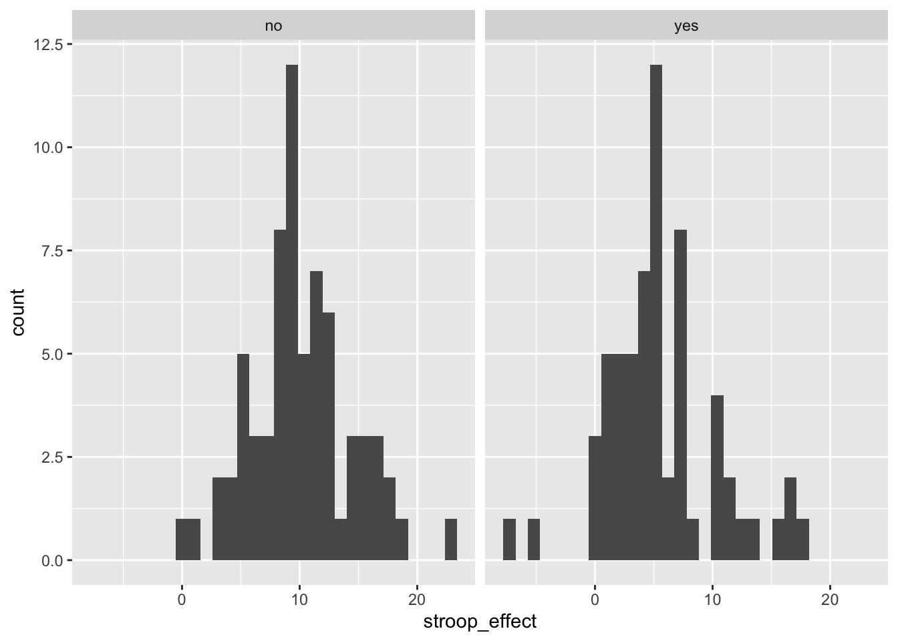
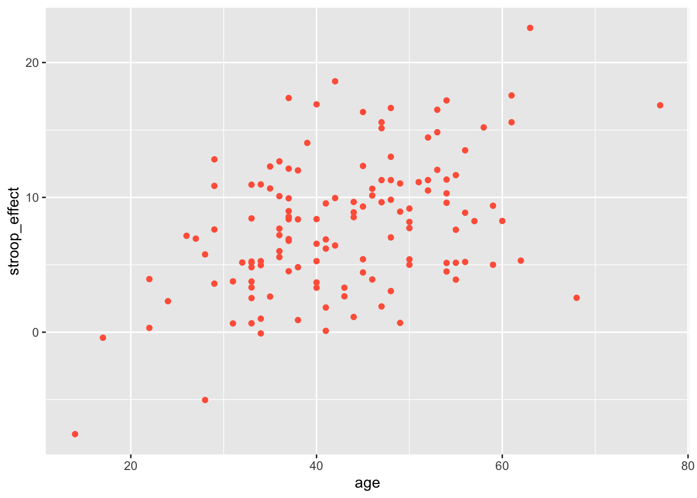
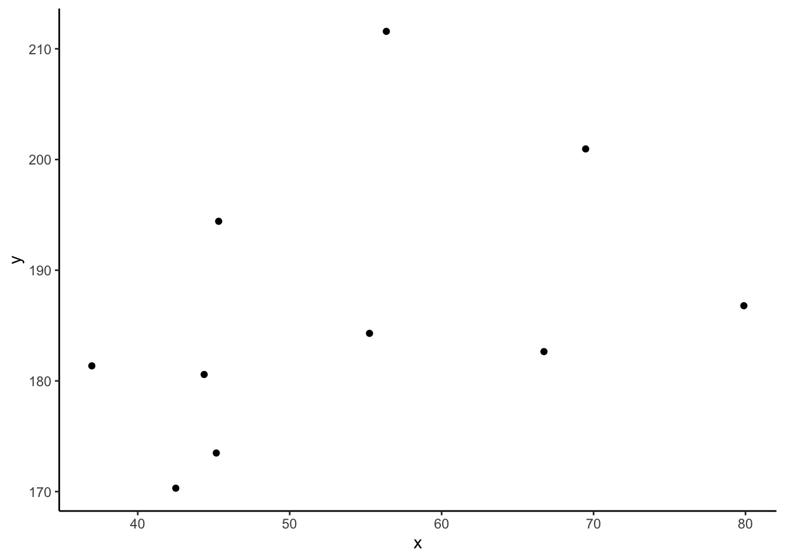
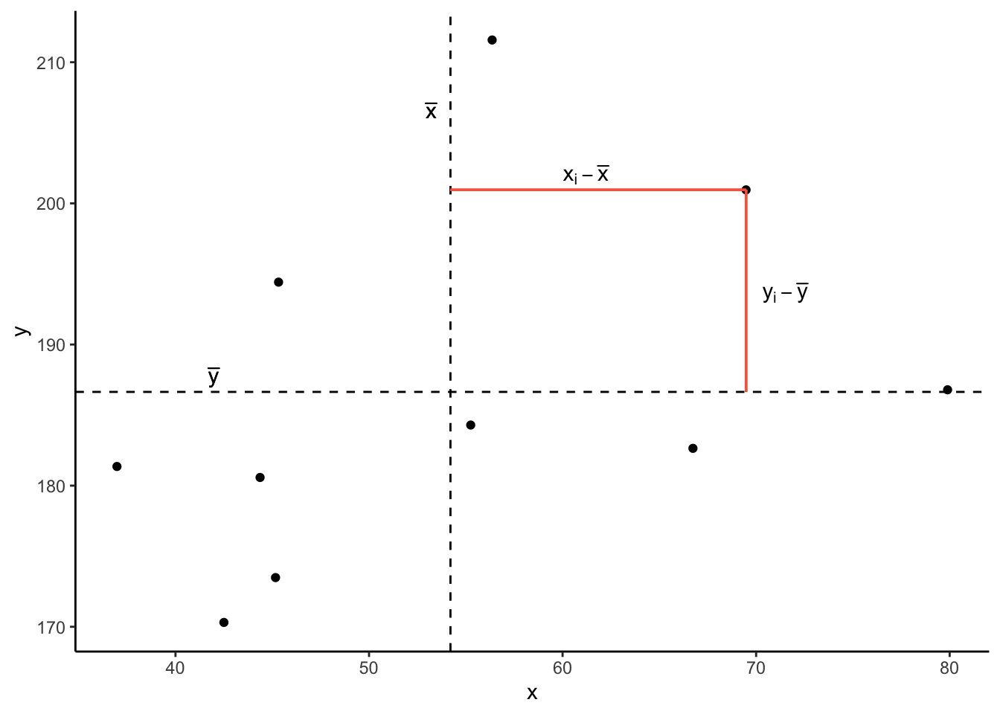
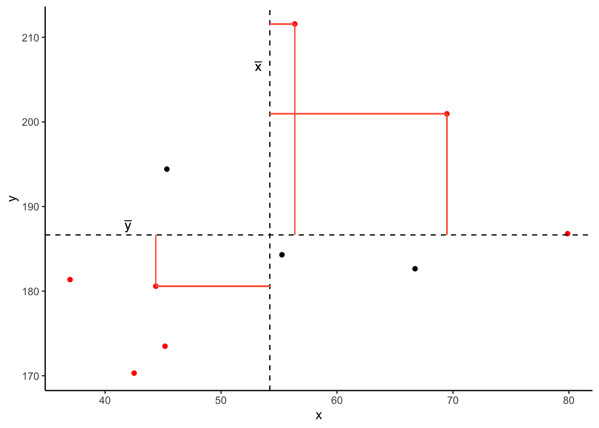

Chapter 4 Visualising and describing relationships
LEARNING OBJECTIVES
- LO1: Understand the relation between X-Y (explanatory/outcome) specification and practical research questions.
- L02: Understand how to summarise and visualize numeric-categorical relationships.
- LO3: Understand how to summarise and visualize numeric-numeric relationships.
4.1 Outcome vs Explanatory
In the previous two chapters, we looked at how to handle different types of data, and how to describe and visualise categorical and numeric distributions. More often than not, research involves investigating relationships between variables, rather than studying variables in isolation.
If we are using one variable to help us understand or predict values of another variable, we call the former the explanatory variable and the latter the outcome variable.
Other names
- outcome variable = dependent variable = response variable = Y
- explanatory variable = independent variable = predictor variable = X
(referring to outcome/explanatory variables as Y and X respectively matches up with how we often want to plot them - the outcome variable on the y-axis, and the explanatory variable on the x-axis)
The distinction between explanatory and outcome variables is borne out in how we design experimental studies - the researcher manipulates the explanatory variable for each unit before the response variable is measured (for instance, we might randomly allocate participants to one of two conditions). This contrasts with observational studies in which the researcher does not control the value of any variable, but simply observes the values as they naturally exist.
We’re going to pick up again with the data collected on the Stroop task from the previous chapter.
library(tidyverse)
stroopdata <- read_csv("https://uoepsy.github.io/data/dapr1/strooptask.csv")
# calculate the "stroop effect" - the difference in time taken to complete
# the matching vs mismatching sets
stroopdata <-
stroopdata %>%
mutate(
stroop_effect = mismatching - matching
)The data is experimental - researchers controlled the presentation of the stimuli (coloured words) and the assignment of whether or not participants received practice.
The researchers are interested in two relationships:
- the relationship between receiving practice (categorical) and the stroop-effect (numeric)
- the relationship between age (numeric) and the stroop-effect (numeric)
4.2 Numeric and Categorical
Recall that the “stroop-effect” is the difference (in seconds) between participants’ times on the mismatching set of words vs the matching set. We know how to describe a numeric variable such as the stroop-effect, for instance by calculating the mean and standard deviation, or median and IQR. We saw how to produce visualisations of numeric variables in the form of density curves, histogram, and boxplots.
# take the "stroopdata" dataframe %>%
# summarise() it, such that there is a value called "mean_stroop", which
# is the mean() of the "stroop_effect" variable, and a value called "sd_stroop", which
# is the standard deviation of the "stroop_effect" variable.
stroopdata %>%
summarise(
mean_stroop = mean(stroop_effect),
sd_stroop = sd(stroop_effect)
)## # A tibble: 1 x 2
## mean_stroop sd_stroop
## <dbl> <dbl>
## 1 7.90 5.02
To understand the relationship between categorical (practice) and the numeric (stroop effect), for now we will simply calculate these summary statistics for the numeric variable when it is split by the different levels in the categorical variable.
In other words, we want to calculate the mean and standard deviation of the stroop_effect variable separately for those observations where practice is “no”, and for those where practice is “yes”:
| practice | stroop_effect |
|---|---|
| no | 15.19 |
| no | 15.57 |
| yes | 2.53 |
| yes | 5.27 |
| yes | -0.09 |
| no | 9.17 |
| yes | 6.91 |
| yes | 7.6 |
| yes | 5.17 |
| … | … |
We can do this using the group_by() function.
group_by()
The group_by() function creates a grouping in the dataframe, so that subsequent functions will be computed on each group.
It is most useful in combination with summarise(), to reduce a variable into a summary value for each group in a grouping variable:
Let’s do this for the Stroop Task data - we will summarise() the stroop_effect variable, after grouping the data by the practice variable:
# take the "stroopdata" %>%
# and group it by each unique value in the "practice" variable (yes/no) %>%
# then summarise() it FOR EACH GROUP, creating summary values called
# "mean_stroop" and "sd_stroop" which are the means and standard deviations of
# the "stroop_effect" variable entries for each group of "practice".
stroopdata %>%
group_by(practice) %>%
summarise(
mean_stroop = mean(stroop_effect),
sd_stroop = sd(stroop_effect)
)## # A tibble: 2 x 3
## practice mean_stroop sd_stroop
## <chr> <dbl> <dbl>
## 1 no 10.0 4.25
## 2 yes 5.52 4.75Visualising - Colours
Given the output above, which of the following visualisations is most representative of these statistics?

We can visualise the data using the same code we had before, but with one small addition - we tell ggplot to colour the data according to the different values in the practice variable.
Note we add this inside the aes() mappings, because we are mapping something on the plot (the colour) to something in the data (the practice variable). If we just wanted to make the line blue, we could put col = "blue" outside the aes().

Visualising - Facets
Interpreting two density curves on top of one another works well, but overlaying two histograms on top of one another doesn’t. Instead, we might want to create separate histograms for each set of values (the stroop_effect variable values for each of practice/no practice groups).
facet_wrap() is a handy part of ggplot which allows us to easily split one plot into many:

4.3 Numeric and Numeric
When we are interested in the relationship between two numeric variables, such as the one we have between age and the stroop-effect, the most easily interpreted visualisation of this relationship is in the form of a scatterplot:
# make a ggplot with the stroopdata
# put the possible values of the "age" variable on the x axis,
# and put the possible values of the "stroop_effect" variable on the y axis.
# for each entry in the data, add a "tomato1" coloured geom_point() to the plot,
ggplot(data = stroopdata, aes(x = age, y = stroop_effect)) +
geom_point(col="tomato1")
The visual pattern that these points make on the plot tells us something about the data - it looks like the older participants tended to have a greater stroop-effect.But we can also have relationships between two numeric variables that look the opposite, or have no obvious pattern, or have a more consistent patterning (see Figure 4.1)

Figure 4.1: Relationships between two numeric variables can look very different
As a means of summarising these different types of relationships, we can calculate the covariance to describe in what direction, and how strong (i.e., how clear and consistent) the pattern is.
Covariance
We know that variance is the measure of how much a single numeric variable varies around its mean.
Covariance is a measure of how two numeric variables vary together, and can express the directional relationship between them.
Covariance is the measure of how two variables vary together.
For samples, covariance is calculated using the following formula:
\[\mathrm{cov}(x,y)=\frac{1}{n-1}\sum_{i=1}^n (x_{i}-\bar{x})(y_{i}-\bar{y})\]
where:
- \(x\) and \(y\) are two variables;
- \(i\) denotes the observational unit, such that \(x_i\) is value that the \(x\) variable takes on the \(i\)th observational unit, and similarly for \(y_i\);
- \(n\) is the sample size.
It often helps to understand covariance by working through a visual explanation.
Consider the following scatterplot:

Now let’s superimpose a vertical dashed line at the mean of \(x\) (\(\bar{x}\)) and a horizontal dashed line at the mean of \(y\) (\(\bar{y}\)):

Now let’s pick one of the points, call it \(x_i\), and show \((x_{i}-\bar{x})\) and \((y_{i}-\bar{y})\).
Notice that this makes a rectangle.
As \((x_{i}-\bar{x})\) and \((y_{i}-\bar{y})\) are both positive values, their product - \((x_{i}-\bar{x})(y_{i}-\bar{y})\) - is positive.

In fact, for all these points in red, the product \((x_{i}-\bar{x})(y_{i}-\bar{y})\) is positive (remember that a negative multiplied by a negative gives a positive):

And for these points in blue, the product \((x_{i}-\bar{x})(y_{i}-\bar{y})\) is negative:

Now take another look at the formula for covariance:
\[\mathrm{cov}(x,y)=\frac{\sum_{i=1}^n (x_{i}-\bar{x})(y_{i}-\bar{y})}{n-1}\]
It is the sum of all these products divided by \(n-1\). It is the average of the products!
We can easily calculate the covariance between variables in R using the cov() function.
cov() takes two variables cov(x = , y = ).
We can either use the $ to pull out the variables from the datset:
## [1] 23.9597Or we can specify the dataframe, use the %>% symbol, and call cov() inside summarise():
stroopdata %>%
summarise(
mean_age = mean(age),
mean_stroop = mean(stroop_effect),
cov_agestroop = cov(age, stroop_effect)
)## # A tibble: 1 x 3
## mean_age mean_stroop cov_agestroop
## <dbl> <dbl> <dbl>
## 1 42.8 7.90 24.04.4 Glossary
- Explanatory variable: A variable used to understand or predict values of an outcome variable.
- Outcome variable: A variable which we are aiming to understand or predict via some explanatory variable(s).
- Scatterplot: A plot in which the values of two variables are plotted along the two axes, the pattern of the resulting points revealing any relationship which is present.
- Covariance: A measure of the extent to which two variables vary together.
cov()To calculate the covariance between two variables.group_by()To apply a grouping in a dataframe for each level of a given variable. Grouped dataframes will retain their grouping, so that if we usesummarise()it will provide a summary calculation for each group.geom_point()To add points/dots to a ggplot.facet_wrap()To split a ggplot into multiple plots (facets) for each level of a given variable.4.4 Inline R code (introduced in the exercises below): R code which is written in-text, rather than inside a code-chunk. When a document with inline R code is rendered, the calculations are performed and resulting output is placed within the written text.
4.5 Exercises
- Open a new Rmarkdown file, and give it an appropriate title for this chapter.
- In a new code-chunk, load the tidyverse package.
- Now create a new heading of “Stroop task data”.
- Hint: remember that we specify headings and subheadings using #, ##, ### etc.
- In a new code-chunk, read in the Stroop task data from https://uoepsy.github.io/data/dapr1/strooptask.csv.
- Add a new variable to the data which is the “stroop-effect” for each observation (the difference in times taken to complete the matching and mismatchings sets of coloured words)

Recall that in this chapter, we visualised the relationship between practice (categorical) and Stroop-effect (numeric) by plotting two density curves overlayed on one another, or two histograms side-by-side.
What other way might we visualise this relationship?
Hint:
Check what other variables there are in the data - use the function names(), and give it your dataframe:
## [1] "id" "age" "practice" "matching" "mismatching"
## [6] "height" "stroop_effect"We also have information recorded on the participants’ heights (measured in cm).
Produce a visualisation of the relationship between height and the Stroop-effect. Before you do so, think about what you expect to see?
Calculate the covariance.
require(lubridate)
mm_walk<-read_csv("https://data.edinburghopendata.info/dataset/d4a86f41-5e78-48cd-adb8-2064acf93ef0/resource/ffbeb785-a19f-4788-bc27-892b024a6750/download/15middlemeadowwalk.csv") %>% mutate(
newdate = dmy(date),
month = month(newdate,label = TRUE),
year = year(newdate),
day = day(newdate)
) %>% filter(year==2012) %>%
group_by(month, day, time) %>%
summarise(cyclists = sum(channel_1)+sum(channel_2)) %>% ungroup %>%
rename(hour = time)
set.seed(1345)
cycdat<-read_csv("https://data.edinburghopendata.info/dataset/d4a86f41-5e78-48cd-adb8-2064acf93ef0/resource/3944c195-947c-4e45-aa21-5a7fea264c52/download/32inverleithrow.csv") %>% mutate(
newdate = dmy(date),
month = month(newdate,label = TRUE),
year = year(newdate)
) %>% group_by(year, month) %>%
summarise(cyclists = sum(channel_1)+sum(channel_2)) %>%
ungroup %>%
bind_rows(
tibble(year = c(rep(2014,12),rep(2015,2)),
month = month(c(1:12,1,2), label=T),
cyclists = round(rnorm(14,4725,1500))
),
.
)
raindat <- read_csv("https://www2.sepa.org.uk/rainfall/api/Month/15201?csv=true") %>%
mutate(
date = dmy(paste0("01 ", Timestamp)),
month = month(date, label = TRUE),
year = year(date),
rainfall_mm = Value
) %>% select(year,month,rainfall_mm)
inv_row <- left_join(cycdat, raindat)We’re going to move to a different dataset now, using data from Edinburgh City Council, and from the Scottish Environment Protection Agency.
Create a new heading in your Rmardkown for “Edinburgh Cyclists”.
The first dataset we are going to use is the from the Bicycle Counters on Middle Meadow Walk (see Figure 4.2).

Figure 4.2: Photo from @SustransScot on Twitter, 2017
Read in the data https://uoepsy.github.io/data/dapr1/cycling_mmwalk.csv and assign it a name of your choice.
The data contains information on the total number of cyclists travelling in either direction on Middle Meadow Walk for each hour of each day in 2012.
Plot the relationship between hour of day and the number of cyclists.
Tip: You will want to make the hour of day a factor first, so that R treats it as different levels.
Using group_by() and summarise(), you can aggregate the data in to grouped averages (using mean()), or grouped totals (using sum()).
- Which month had the highest total number of cyclists?
- Which hour of the day had the highest average number of cyclists?
Another dataset, available at https://uoepsy.github.io/data/dapr1/cycling_invrow.csv, contains information on the total number of cyclists each month from 2014 to 2016 on Inverleith Row, Edinburgh. It also contains data on the monthly rainfall (in millimetres) measured at the nearby Royal Botanic Gardens.
Read the data into R, and produce a visualisation of the relationship between monthly rainfall and monthly cyclists.
Make a new heading of “Pulse rate and exercise”.
Read in a new dataset from https://uoepsy.github.io/data/dapr1/pulse.csv.
Check out the data codebook at here.
Explore visually the relationship between active and resting pulse rate and the variables which influence resting pulse rate.
For each plot you make:
- Think about what variable we are assuming to influence another. Which should be on the x-axis, and which on the y?
- Think about what type of measurement each variable is - e.g., numeric, categorical. How is it best to visualise each relationship?
- Try to make your plots easily interpretable (for instance, add useful axes and titles using
labs(title = "---", x = "---", y = "---")), and aesthetically pleasing (try out some of the different themes).


We’re going to now learn about how to write a paragraph of text with embedded calculations. Each time we render the document, the calculations get performed and the ouput gets created. This is really useful as it means we can write a report which we can really easily update if we change our analysis, or include more data.
Instead of writing in code-chunks, as we have been, we can also write inline R code, which we specify as shown in Figure 4.3.
Figure 4.3: Writing Inline R code. The code on the left gets compiled to look like what is shown on the right (source: https://rmarkdown.rstudio.com/authoring_quick_tour.html)
Tip: for writing inline code, often using code like mean(data$variable) is easier, because it is more compact than data %>% summarise(mean = mean(variable)) %>% pull(mean).

Final task for this chapter!
Compile your Rmarkdown document into an html. Remember that you can do this using the “Knit” button at the top.
You’ll notice that as the .html file shows up in the files tab in the bottom-right of Rstudio.
Make sure that your inline R code is displaying correctly.
Upload your .html to the discussion board, so we can all admire each other’s lovely ggplots!